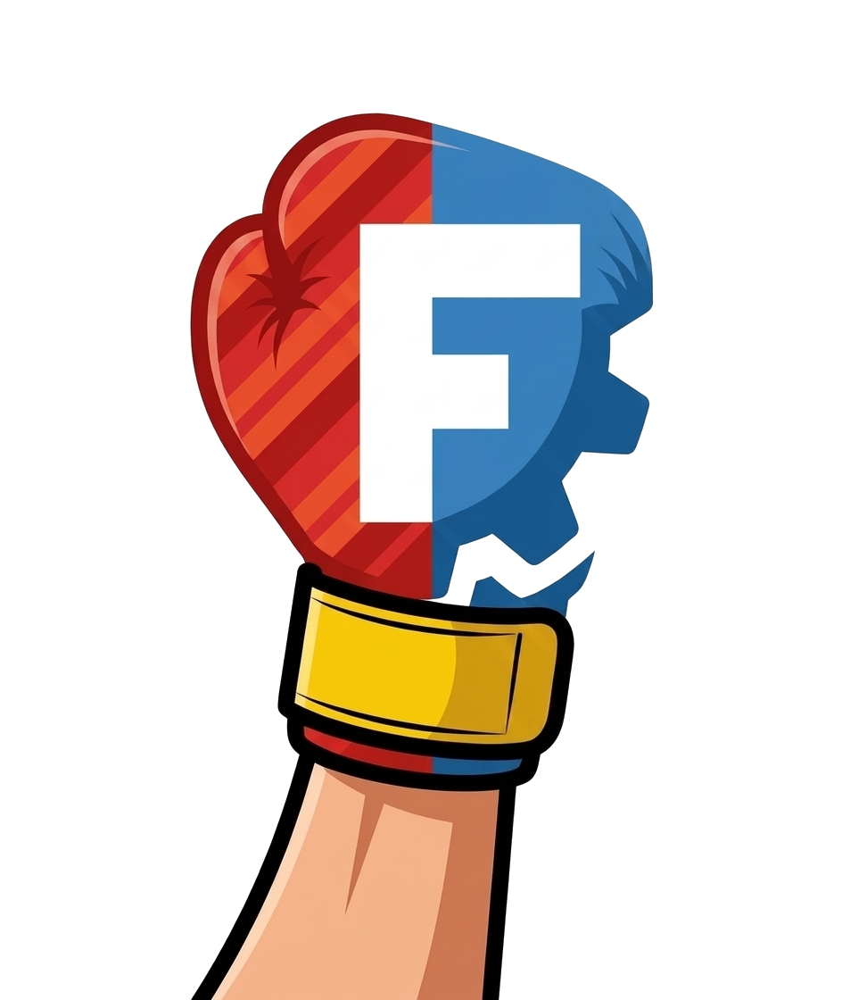

The direct-modeling interface we always wished FreeCAD had.
beta - live for initial discussion and feedbackUppercut takes the best ideas from the easiest modelers to use (SketchUp's push/pull and inference drawing, Fusion 360's press-pull) and builds them into FreeCAD 1.1 as one native workbench. Every drag, offset and sweep commits an ordinary parametric feature, so direct modeling and FreeCAD's full feature tree are always both available.
One toolbar covers the whole draw-extrude-measure loop, with single-letter shortcuts scoped to the workbench.
https://github.com/mathmati/uppercut under
Custom repositories (branch main).Uppercut is an umbrella: the drawing and modeling tools come from small standalone add-ons it detects and arranges.
This is a young project. It is verified with a headless regression suite on every change, but real-world feedback is what improves it. If something feels wrong, send a screenshot and the error to the issue tracker and we will iterate.